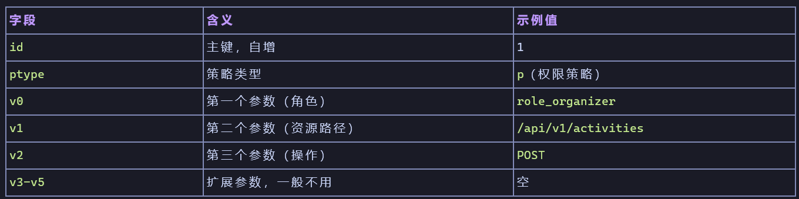

Casbin 实战：RBAC 与资源权限
Casbin 适配详解：渡隅 V1 / 作业版
这次不是用 Casbin 替换 JWT，而是让两者分工：
JWT：证明“当前请求是谁发出的”
Casbin：判断“这个人能不能访问这个接口”
Service：判断“这个人能不能操作这一条具体数据”
例如用户 user:5 请求取消活动 id=12：
1. JWT 解析出 userID = 5
2. Casbin 判断 user:5 是否有取消活动接口的权限
3. ActivityService 判断 activity.created_id 是否等于 5
4. 两层都通过，才真正取消活动
这样可以防止两类问题：
- 普通用户直接调用创建、发布接口；
- 一个主办方调用接口去修改、取消别人的活动。
一、当前角色设计
当前版本有三个实际使用的 Casbin 角色：
Casbin 角色 | 角色含义 | 能力 |
| 普通登录用户 | 查看自己的资料、绑定手机号、查看自己的报名记录 |
| 已绑定合法手机号的报名者 | 报名、取消自己的报名 |
| 已认证后的主办方角色 | 创建、编辑、发布、取消自己的活动，查看报名名单 |
注意：绑定手机号后，同一个用户会同时拥有：
ordinary_user
verified_user
organizer
所以你原来的“已认证用户可以创建和认领任务”逻辑仍然成立，只是权限现在由 Casbin 明确管理。
目前没有给任何用户自动授予全局 admin。后续真的需要管理员后台时，再为指定用户增加：
g, user:1, admin
并添加管理员策略即可。
二、第一步：安装依赖
两个项目都已加入：
go get github.com/casbin/casbin/v3 github.com/casbin/gorm-adapter/v3
作用：
github.com/casbin/casbin/v3
Casbin 核心授权引擎
github.com/casbin/gorm-adapter/v3
让 Casbin 使用已有 GORM + PostgreSQL 保存策略
当前版本写入 go.mod 的核心依赖是：
github.com/casbin/casbin/v3 v3.11.0
github.com/casbin/gorm-adapter/v3 v3.41.0
你不需要额外创建第二个 PostgreSQL 数据库。Casbin 直接使用现在的 duyu 数据库。
三、第二步：理解 Casbin 模型文件
新增文件：
[casbin_model.conf](C:\\Users\\17hwliao\\Desktop\\Duyu\\configs\\casbin_model.conf)
内容：
[request_definition]
r = sub, obj, act
[policy_definition]
p = sub, obj, act
[role_definition]
g = _, _
[policy_effect]
e = some(where (p.eft == allow))
[matchers]
m = g(r.sub, p.sub) && keyMatch2(r.obj, p.obj) && r.act == p.act
逐段理解。
1. 请求定义
[request_definition]
r = sub, obj, act
每一次权限判断都传入三个参数：
sub：谁在访问，例如 user:5
obj：访问什么资源，例如 /api/v1/activities/12/publish
act：做什么操作，例如 POST
因此 Casbin 最终相当于判断：
Enforce("user:5", "/api/v1/activities/:id/publish", "POST")
2. 策略定义
[policy_definition]
p = sub, obj, act
策略也有三个字段：
角色、接口路径、HTTP 方法
例如：
p, organizer, /api/v1/activities/:id/publish, POST
含义是：
organizer 角色可以调用发布活动接口。
3. 用户和角色的关系
[role_definition]
g = _, _
g 表示用户属于哪个角色。
例如：
g, user:5, ordinary_user
g, user:5, verified_user
g, user:5, organizer
含义是：
ID 为 5 的用户，既是普通登录用户、已认证报名者，也是主办方。
这里统一用 user:5，而不是单独写 5，是为了避免数字 ID 和角色名称混淆。
对应代码在：
[casbin.go](C:\\Users\\17hwliao\\Desktop\\Duyu\\internal\\authorization\\casbin.go)
func Subject(userID uint64) string {
return "user:" + strconv.FormatUint(userID, 10)
}
4. 策略效果
[policy_effect]
e = some(where (p.eft == allow))
含义是：
只要存在至少一条匹配的 allow 策略，就允许访问。
没有匹配策略，默认拒绝。
这正符合后端权限设计原则：
默认拒绝，显式授权。
5. 匹配规则
[matchers]
m = g(r.sub, p.sub) && keyMatch2(r.obj, p.obj) && r.act == p.act
拆开看：
g(r.sub, p.sub)
判断用户是否拥有策略要求的角色。
keyMatch2(r.obj, p.obj)
匹配路由参数。
例如策略写的是：
/api/v1/activities/:id/publish
真实请求可能是：
/api/v1/activities/12/publish
keyMatch2 可以认为它们匹配。
r.act == p.act
HTTP 方法必须一致。
例如：
POST /api/v1/activities/12/publish
不能因为有 GET 权限就被允许。
四、第三步：在 PostgreSQL 创建策略表
新增迁移文件：
[000007_add_casbin_rules.up.sql](C:\\Users\\17hwliao\\Desktop\\Duyu\\migrations\\000007_add_casbin_rules.up.sql)
它创建：
casbin_rule
表的大致结构：
id
ptype
v0
v1
v2
v3
v4
v5
Casbin 用通用字段保存不同类型的规则。
例如接口权限策略：

ptype | v0 | v1 | v2 |
|
|
|
|
|
|
|
|
用户角色关系：
ptype | v0 | v1 |
|
|
|
|
|
|
|
|
|
你已经执行过迁移。如果以后在新电脑、新数据库中启动项目，需要执行：
Get-Content -Raw migrations\000007_add_casbin_rules.up.sql `
| docker exec -i postgresql psql -U postgres -d duyu
Casbin GORM Adapter 启动时也会检查 casbin_rule 表；但保留迁移 SQL 是更规范、可追溯的做法。
五、第四步：初始化 Casbin
新增文件：
[internal/authorization/casbin.go](C:\\Users\\17hwliao\\Desktop\\Duyu\\internal\\authorization\\casbin.go)
核心初始化代码：
func New(db *gorm.DB, modelPath string) (*Service, error) {
adapter, err := gormadapter.NewAdapterByDB(db)
if err != nil {
return nil, fmt.Errorf("create casbin adapter: %w", err)
}
enforcer, err := casbin.NewEnforcer(modelPath, adapter)
if err != nil {
return nil, fmt.Errorf("create casbin enforcer: %w", err)
}
service := &Service{enforcer: enforcer}
if err := service.seedPolicies(); err != nil {
return nil, err
}
return service, nil
}
这段代码做了四件事：
1. 复用项目已有的 GORM PostgreSQL 连接
2. 创建 Casbin 的 PostgreSQL Adapter
3. 读取 configs/casbin_model.conf
4. 从 casbin_rule 读取策略，并补充默认策略
在程序入口中初始化：
[main.go](C:\\Users\\17hwliao\\Desktop\\Duyu\\cmd\\server\\main.go)
authorizer, err := authorization.New(db, "configs/casbin_model.conf")
if err != nil {
zap.L().Error("initialize casbin failed", zap.Error(err))
return
}
然后把 authorizer 传给：
AuthService
Router
Casbin Middleware
六、第五步：写入默认策略
Casbin 初始化时会调用：
service.seedPolicies()
当前写入 13 条默认接口策略。
例如普通用户：
{RoleOrdinary, "/api/v1/users/me", "GET"},
{RoleOrdinary, "/api/v1/users/me/phone", "PUT"},
{RoleOrdinary, "/api/v1/users/me/registrations", "GET"},
已认证报名者：
{RoleVerified, "/api/v1/activities/:id/registrations", "POST"},
{RoleVerified, "/api/v1/activities/:id/registrations/me", "DELETE"},
主办方：
{RoleOrganizer, "/api/v1/activities", "POST"},
{RoleOrganizer, "/api/v1/activities/:id", "PUT"},
{RoleOrganizer, "/api/v1/activities/:id/publish", "POST"},
{RoleOrganizer, "/api/v1/activities/:id/cancel", "POST"},
{RoleOrganizer, "/api/v1/activities/:id/registrations", "GET"},
写入方式是：
s.enforcer.AddPolicy(policy[0], policy[1], policy[2])
AddPolicy 是幂等的：
策略不存在：插入数据库
策略已存在：跳过，不重复插入
因此每次重启项目都不会出现重复策略。
七、第六步：注册、登录、绑定手机号时同步角色
原先你只有：
手机号通过格式校验
→ User.Role() 返回 verified_user
现在增加为：
手机号通过格式校验
→ users 表更新 phone、phone_verified_at
→ Casbin 增加 verified_user
→ Casbin 增加 organizer
核心方法：
func (s *Service) SyncUserRoles(user *model.User) error
逻辑是：
s.enforcer.AddRoleForUser(Subject(user.ID), RoleOrdinary)
任何注册用户都先获得：
ordinary_user
如果用户手机号已认证：
s.enforcer.AddRoleForUser(Subject(user.ID), RoleVerified)
s.enforcer.AddRoleForUser(Subject(user.ID), RoleOrganizer)
1. 注册时同步
在：
[auth_service.go](C:\\Users\\17hwliao\\Desktop\\Duyu\\internal\\service\\auth_service.go)
注册用户写入数据库后：
if err := s.authz.SyncUserRoles(user); err != nil {
return dto.UserResponse{}, err
}
因此新用户注册成功后，数据库会有：
g, user:新用户ID, ordinary_user
2. 登录时同步
登录成功、签发 JWT 前：
if err := s.authz.SyncUserRoles(user); err != nil {
return dto.LoginResponse{}, err
}
为什么登录时还要同步？
因为项目可能在接入 Casbin 前已经有旧用户。旧用户没有 g 角色记录，但只要重新登录一次，就会根据自己的手机号状态补齐 Casbin 角色。
3. 绑定手机号时同步
手机号绑定成功后，原代码会重新查询用户：
user, err := s.users.FindByID(ctx, userID)
然后：
if err := s.authz.SyncUserRoles(user); err != nil {
return dto.UserResponse{}, err
}
所以绑定手机号后的数据库结果会变成：
g, user:5, ordinary_user
g, user:5, verified_user
g, user:5, organizer
八、第七步：在 Gin 中间件执行 Casbin
新增文件：
[internal/middleware/casbin.go](C:\\Users\\17hwliao\\Desktop\\Duyu\\internal\\middleware\\casbin.go)
核心逻辑：
claims, ok := CurrentUser(c)
先从 JWT 中拿当前用户：
claims.UserID
然后执行 Casbin：
allowed, err := authorizer.Enforce(
claims.UserID,
c.FullPath(),
c.Request.Method,
)
这里非常重要：
c.FullPath()
拿到的是 Gin 路由模板：
/api/v1/activities/:id/publish
而不是请求中的实际地址：
/api/v1/activities/12/publish
这样更容易与 Casbin 策略统一匹配。
没有权限时：
response.Forbidden(c, "permission denied")
c.Abort()
return
最终 Apifox 会收到：
{
"code": 20003,
"message": "permission denied"
}
HTTP 状态码是：
403 Forbidden
九、第八步：控制中间件执行顺序
路由文件：
[router.go](C:\\Users\\17hwliao\\Desktop\\Duyu\\internal\\router\\router.go)
原来受保护路由只有：
protected.Use(middleware.Auth(jwtManager))
现在变为：
protected.Use(
middleware.Auth(jwtManager),
middleware.Casbin(authorizer),
)
顺序不能反过来。
正确顺序：
Auth
↓
解析 JWT
↓
把 claims 放进 Gin Context
↓
Casbin
↓
从 Context 取 userID
↓
判断权限
如果先执行 Casbin：
Casbin 拿不到当前用户 ID
→ 无法鉴权
公开接口没有加入这两个中间件：
v1.GET("/activities", activityHandler.List)
v1.GET("/activities/:id", activityHandler.Get)
因此游客依然可以浏览已发布活动。
十、为什么仍保留 Service 层权限校验
Casbin 当前判断的是：
organizer 是否能访问“取消活动接口”
但 Casbin 不知道：
这个 organizer 是否就是活动创建者
例如：
user:5 是 organizer
user:8 创建了活动 12
Casbin 会允许 user:5 访问取消接口，因为他确实是主办方。
但 ActivityService.Cancel 还会继续判断：
if activity.OrganizerID != organizerID {
return dto.ActivityResponse{}, ErrNotActivityOwner
}
所以最终仍会返回：
403 activity owner required
职责分层如下：
层 | 判断内容 |
JWT | Token 是否有效、当前用户是谁 |
Casbin | 当前用户的角色能否访问该接口 |
Service | 当前用户能否操作这一条具体活动数据 |
Repository | 数据库查询、事务、行锁、写入 |
这就是比较规范的后端权限设计。
十一、你在 Apifox 中如何验证 Casbin
场景一：普通用户不能创建活动
- 注册普通用户。
- 登录并保存 Token。
- 不绑定手机号。
- 请求：
POST /api/v1/activities
Authorization: Bearer {{user_token}}
预期：
HTTP 403
{
"code": 20003,
"message": "permission denied"
}
这一步拦截发生在 Casbin 中间件，还没有进入 ActivityHandler.Create。
场景二：绑定手机号后可以创建活动
调用：
PUT /api/v1/users/me/phone
Authorization: Bearer {{user_token}}
Content-Type: application/json
{
"phone": "13800138000"
}
绑定成功后，再调用创建活动接口。
预期：
HTTP 200
因为用户已经同步获得：
verified_user
organizer
场景三：主办方不能修改别人的活动
- 用户 A 绑定手机号，创建活动。
- 用户 B 也绑定手机号。
- 用户 B 调用：
PUT /api/v1/activities/{{activity_id}}
Authorization: Bearer {{user_b_token}}
Casbin 的结果：
允许进入接口
因为 B 也是 organizer。
Service 的结果：
拒绝
因为：
activity.organizer_id != user_b_id
这能证明你的系统不是只靠接口权限，而是还有资源所有权校验。
十二、数据库中看到 13 条策略正常吗？
正常。
启动后你可以查询：
docker exec postgresql psql -U postgres -d duyu `
-c "SELECT ptype, v0, v1, v2 FROM casbin_rule ORDER BY id;"
当前会看到 13 条 p 类型策略，例如：
p | ordinary_user | /api/v1/users/me | GET
p | verified_user | /api/v1/activities/:id/registrations | POST
p | organizer | /api/v1/activities/:id/publish | POST
如果当前数据库没有用户，则：
casbin_role_mappings = 0
也是正常的。
当用户注册后，会增加：
g | user:1 | ordinary_user
绑定手机号后，再增加：
g | user:1 | verified_user
g | user:1 | organizer
十三、这次实际修改了什么
两个项目均已同步以下核心改动：
configs/casbin_model.conf
internal/authorization/casbin.go
internal/middleware/casbin.go
migrations/000007_add_casbin_rules.up.sql
migrations/000007_add_casbin_rules.down.sql
cmd/server/main.go
internal/router/router.go
internal/service/auth_service.go
go.mod
go.sum
说明文档也已同步更新：
- [原项目 README](C:\\Users\\17hwliao\\Desktop\\Duyu\\README.md)
- [原项目 API 文档](C:\\Users\\17hwliao\\Desktop\\Duyu\\docs\\api.md)
- [原项目需求说明](C:\\Users\\17hwliao\\Desktop\\Duyu\\docs\\requirements.md)
- [作业 README](C:\\Users\\17hwliao\\Desktop\\后端设计\\README.md)
- [作业答辩指南](C:\\Users\\17hwliao\\Desktop\\后端设计\\作业答辩对照与演示指南.md)
两个项目均已通过：
go test ./...
Casbin 的 RBAC 模型、角色映射和数据库 Adapter 的设计可参考官方文档：Casbin RBAC，Casbin Adapter。